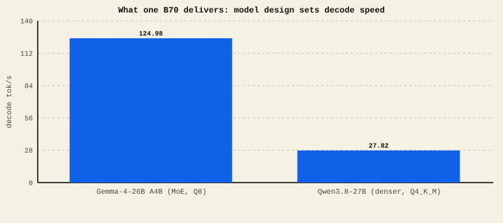

The short version
- Total parameters decide how much VRAM the model needs. Active parameters strongly influence decode speed.
- Dense models use all their weights per token. Mixture-of-Experts (MoE) models use only a slice — so they're fast for their size.
- A name like A4B or A3B tells you the active size (≈4B or 3B active) — that's your speed hint.
- Fit first, then quality/capability and packet evidence; compare decode, prefill, TTFT, memory, and context only inside that viable set.
Dense vs mixture-of-experts
A dense model runs every one of its weights for every token. A 27B dense model does ~27B parameters' worth of work per token — accurate, but heavy on the memory reads that set decode speed.
A mixture-of-experts model is split into many "experts," and a router picks only a few per token. It might hold 30B parameters total but activate just 3–4B on any given token. You pay the VRAM of the big model but the speed of a small one. That's the trick behind the fastest models on modest hardware.
Same card, two designs

Qwen3.8-27B is a dense hybrid model: it has no A3B suffix and does not get MoE-style 3B-active decode. Gemma-4-26B-A4B is about 4B active; Nemotron-30B-A3B is about 3B active. When a model really has an A#B suffix, that active size is the better speed hint.
The VRAM math
Whatever the design, the model's weights must fit in memory, and you need room left for the KV cache (your context) on top. A rough single-card budget on a 32 GiB B70:
- Weights: total params × bits-per-weight ÷ 8. A 27B model at 4-bit (Q4) ≈ 15–18 GB; at 8-bit (Q8) ≈ 27–30 GB. See Quantization.
- KV cache: grows with context; can be several GB to 16 GB at very long context.
- Rule of thumb: keep weights + expected KV under ~30 GB on a 32 GiB card. If a Q8 model is tight, drop to Q4 or add a card.
Selected lab measurements
What we've actually measured on B70s. Rates are for different card counts and methods — read the columns, don't compare rows blindly. Lab-measured
| Model | Design | Cards | Decode tok/s | Note |
|---|---|---|---|---|
| Gemma-4-26B A4B | MoE (~4B active) | 1 | 124.98 | Runs on one card; measured |
| Qwen3.8-27B | hybrid, Q4_K_M | 1 | 27.82 | Quality-checked; speed measured out to 32K |
| Qwen3.8-27B | Q8_0 | 2 | 36.77 | 8-bit: slower, more conservative |
| Qwen3.8-27B | INT4 + MTP 5 | 2 | 101.2 | Research result (not yet repeatable run to run) |
| Laguna S 2.1 | INT4 + DFlash | 4 | 125.46 | Lab record run |
| Muse-Glimmer-30B | Q8/WOQ + DFlash | 4 | 100.37 | Average across repeat runs |
The Qwen 27B family page keeps weights, quantizations, TP, MTP, context, prefill, TTFT, quality, and gaps together. The full filterable packet list lives in the Recipes.
How to choose
- Match to your cards. One B70? A fast MoE (Gemma-4-26B) or a Q4 27B. More cards unlock bigger models and speculative records.
- Match to your job. Coding and agents need tool behavior and responsiveness; document work needs long context; image tasks need a vision-enabled packet such as the Qwen3.8 Q5_K_S flagship.
- Then optimize. Once the model fits and runs, the other nine guides are how you make it faster.
A high headline number can hide caveats: it may be a research lane with unresolved determinism, a narrow benchmark shape, or a different card count than yours. It may also be a model that's fast but weaker at your task. We now have B70 measurements for Ornith, Nemotron, and LFM2.5, but their packets still carry different maturity and quality boundaries. Always check the evidence label and exact configuration behind a rate.
For most people on a single B70: start with Gemma-4-26B for a fast multimodal lane, Qwen3.8-27B Q4_K_M for the validated text package and measured 32K curve, or the separate Q5_K_S 256K + vision packet when those capabilities matter more than decode. Get one exact packet running, then tune.